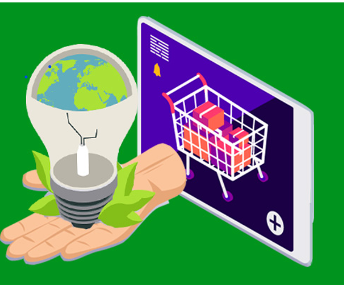
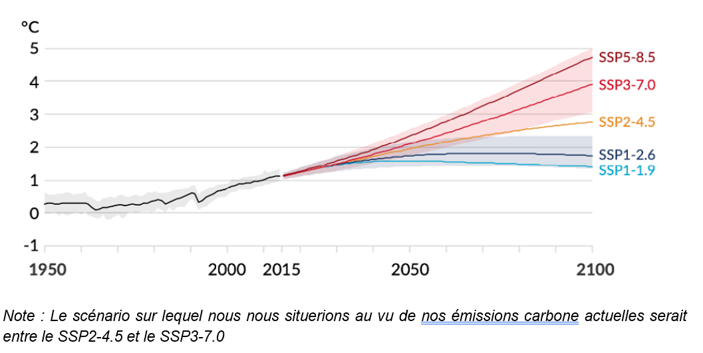

Résumé
Comme tout modèle économique, l’E-commerce apporte son lot de défis écologiques. Nous allons tenter ici de dresser quelques solutions qui pourraient réduire l’impact carbone des vente lignes
Source
Analyse des solutions environnementales
L’enjeu environnemental se pose dans n’importe quel domaine professionnel. De plus en plus d'initiatives sont prises afin de limiter l’empreinte carbone d’une industrie ou d’un produit. Pour l’E-commerce, qui continuera à se démocratiser dans le futur, les sources d’émissions de carbone restent nombreuses et non négligeables. Les rapports du Giec (Groupe d’experts intergouvernemental sur l’évolution du climat) nous ont donné des prévisions d’émissions carbones pour les années futures, qui marqueront le réchauffement et chambouleront le climat de la Terre. Les rapports sont francs, l’urgence est là, il faut agir. Le Giec nous donne aussi des scénario positif (SSP1) qui sont possible d’atteindre en atténuant notre empreinte carbone. Nous allons tenter de voir comment l’E-commerce devrait se développer pour rester durable et respecter notre planète.
